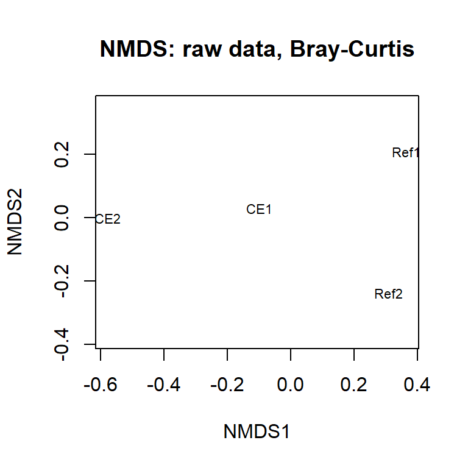

6 Machine Learning
So far, every model we’ve used has had a single response variable. Multivariate analyses expand this to allow the analysis of, for example, counts of each species within a community. Statistical routines for multivariate analysis are relatively new and have co-evolved with computational capacity over the last 50 years or so. Multivariate data typically take the form of a matrix of samples (each row is a sample) v ‘features’ (columns). Features may include things like faunal counts, chemical concentrations, or environmental conditions.
Multivariate analysis typically includes three stages: 1) data transformation or standardisation, 2) generation of a dissimilarity matrix and, 3) ordination (display) of that matrix. Each of these elements has numerous options, with advantages and disadvantages to each. Multivariate analysis are less inferential than most univariate approaches and implementation can feel like a ‘black-art’! Statisticians are still arguing about the best way to approach multivariate analyses.
Multivariate data, such as species inventories, have been recorded for centuries and form a critical resource. Multivariate time series data are particularly important for assessing relative change that might be attributable to man’s activities, for example in relation to climate or land-use change. The ‘internet of things’, the generation of multiple data-streams from the same station (e.g. a glider with CTD), and the development of bioinformatics (e.g. metabarcoding) all lend themselves to multivariate analyses.
More detail on the the material we cover here is given in Clarke et al. 2014. Change in marine communities: An approach to statistical analysis and interpretation.. If that link does not work, you can try navigating to the PRIMER-e downloads page, fill out your info to download the Manuals, then select “Change in Marine Communities”. Unfortunately, the PRIMER software developed by the authors is not free. Instead, we’ll use our gloriously free and open source R.
6.1 Multivariate analysis in R
For the non-metric NMDS workflow, we’ll start by simulating some data. Then, we’ll transform the data (‘log’ and fourth-root) and generate dissimilarity matrices from this transformed data. Finally, we’ll plot it using NMDS. We’ll generate diversity indices with our simulated data, then have a look at some real data (available via the package vegan).
For the PCA workflow, we’ll have a look at some environmental data using PCA. Throughout this practical, we’ll illustrate some coding techniques which will help you practice wrangling your data to make it suitable for analysis. As we’ve discussed, data wrangling is a time-consuming and crucial part of data analysis so familiarity with this is essential.
Recall that the ^ operator raises each element in a vector to a power. For example, say we create a vector obs_values <- c(1, 10, 35). We can calculate a fourth-root transformation of the whole vector with obs_values^(1/4). Remember from previous courses that this is identical to sqrt(sqrt(obs_values)).
# these toy data duplicate those in the multivariate lecture.
worm_df <- data.frame(
row.names = c("CE1", "CE2", "Ref1", "Ref2"),
Capitella = c(1000, 1500, 10, 50),
Malacoeros = c(500, 2000, 50, 25),
Mysella = c(1, 0, 25, 30),
Nucella = c(1, 0, 20, 15)
)
worm_df Capitella Malacoeros Mysella Nucella
CE1 1000 500 1 1
CE2 1500 2000 0 0
Ref1 10 50 25 20
Ref2 50 25 30 15# alt-log transformation: ifelse(x==0, 0, log(x))
worm_df_log <- decostand(worm_df, method = "log", logbase = 10)
worm_df_4rt <- worm_df^0.25Take a look at worm_df, worm_df_log, and worm_df_4rt to be sure they make sense.
Next we use vegdist() to generate different distance matrices for the raw and transformed data. See ?vegdist for more information. We’ll use Bray-Curtis for the raw and 4th-root transformed data, and alternative Gower for the alt-log transformed data. See the multivariate lecture area on Brightspace for details on these algorithms. Feel free to investigate other combinations of data transformation and dissimilarity matrices.
vegdist(worm_df, method = "bray") CE1 CE2 Ref1
CE2 0.4002399
Ref1 0.9228376 0.9667129
Ref2 0.9050555 0.9585635 0.3333333vegdist(worm_df_4rt, method = "bray") CE1 CE2 Ref1
CE2 0.18044721
Ref1 0.39098221 0.59100112
Ref2 0.36024122 0.55728021 0.08642723vegdist(worm_df_log, method = "altGower") CE1 CE2 Ref1
CE2 0.6945378
Ref1 1.4247425 2.1192803
Ref2 1.3138181 2.0083559 0.3010300Q140. How many combinations of transformation and dissimilarity matrix do we have already?
Q141. Examine one or more of the dissimilarity matrices. Which sites are closer (smaller numbers) and which are further apart (bigger numbers)? Does this align with an ‘eyeballing’ of the data? How has the data transformation changed the resultant dissimilarity matrix?
Next we want to plot our dissimilarities, so we can easily visualize which sites are more similar/dissimilar to each other. We will use functions from vegan to plot the ordinations. Remember that you can run ?packageName to learn more about any R package, typically with helpful examples and vignettes of the most useful applications of the package.
We have numerous options in relation to displaying the dissimilarity matrices. We’ll explore non-metric multiple dimensional scaling, abbreviated to NMDS, nMDS, nmMDS, or just MDS.
Q142. Use ?vegdist to see what alternative distance measures are available.
The metaMDS() function calculates a dissimilarity matrix (as we did above) and produces an R object with all the information needed for plotting. It expects that samples are in rows and species (or features) are in columns. We can also specify the distance metric, the number of axes, whether to autotransform the data, and many other options. See ?metaMDS for the default values and other available arguments.
ord_raw <- metaMDS(worm_df, distance = "bray", k = 2,
autotransform = FALSE, trace = FALSE)Warning in metaMDS(worm_df, distance = "bray", k = 2, autotransform = FALSE, :
stress is (nearly) zero: you may have insufficient dataWarning in postMDS(out$points, dis, plot = max(0, plot - 1), ...): skipping
half-change scaling: too few points below thresholdordiplot(ord_raw, choices = c(1, 2), display = "sites",
type = "text", main = "NMDS: raw data, Bray-Curtis")
Compare this with the 4th-root transformed data using the same distance metric.
ord_4rt <- metaMDS(worm_df_4rt, distance = "bray", k = 2,
autotransform = FALSE, trace = FALSE)Warning in metaMDS(worm_df_4rt, distance = "bray", k = 2, autotransform =
FALSE, : stress is (nearly) zero: you may have insufficient dataWarning in postMDS(out$points, dis, plot = max(0, plot - 1), ...): skipping
half-change scaling: too few points below thresholdQ143. Plot ord_4rt. How has the 4th root changed your data interpretation?
Q144. Examine your ordination(s) and interpret, cross referencing to the raw and transformed data. Are the patterns that you see in the data apparent on the ordination?
You can include on your plot the species ‘locations’ (as determined by their correlation with the axes). This shows where the main associations are occurring.
# you can also plot the 'species' on the ordination,
ordiplot(ord_4rt, choices = c(1, 2), display = c("sites", "species"),
type = "text", main = "NMDS, 4th-rt trans., Bray-Curtis")
Q145. Re-plot the untransformed data, but this time include the species. How has the transformation changed your interpretation of the data?
Let’s have a look at another simulated dataset.
comm_df <- data.frame(
row.names = c("Dunst", "Creran", "Lismore", "Charl"),
SpA = c(1, 20, 30, 40),
SpB = c(11, 22, 50, 1),
SpC = c(500, 40, 30, 20),
SpD = c(10, 25, 35, 50),
SpE = c(4, 3, 2, 1),
SpF = c(40, 250, 1, 9)
)
comm_df SpA SpB SpC SpD SpE SpF
Dunst 1 11 500 10 4 40
Creran 20 22 40 25 3 250
Lismore 30 50 30 35 2 1
Charl 40 1 20 50 1 9ord_comm <- metaMDS(comm_df, distance = "bray", k = 2,
autotransform = FALSE, trace = FALSE)Warning in metaMDS(comm_df, distance = "bray", k = 2, autotransform = FALSE, :
stress is (nearly) zero: you may have insufficient dataWarning in postMDS(out$points, dis, plot = max(0, plot - 1), ...): skipping
half-change scaling: too few points below threshold
Q146. Have a look at these raw data. What are the main trends? Which sites are more similar?
These data are still much simpler than most ‘real’ data sets but it is still difficult to summarise the similarities and differences between stations. However, multivariate analyses help you in this process.
Q147. Now fourth-root transform these data, generate the new dissimilarity matrix and plot it.
Q148. What has the transformation done to your interpretation of differences between the Sites and Site x Species associations?
Q149. Add a title to your graph.
6.2 Diversity indices
Prior to the development of the multivariate techniques you’ll be using today, univariate indices were derived from multivariate data. A classic example of such a univariate measure in ecology is the Shannon-Wiener diversity index (a.k.a., Shannon’s H). This index balances the number of species in a sample and the relative abundance of each species (where ‘species’ can once again be any sort of feature). Univariate measures of ‘evenness’ can also be derived from multivariate data and, when reporting species data, you may also wish to include species richness, which is just the number of species present regardless of their abundances.
We can use the comm_df dataset we invented to explore some diversity concepts.
Q150. Looking at the comm_df data (by eye) and given the description above, which of the sites is associated with the lowest and highest diversity?
shannon_H <- diversity(comm_df, "shannon", base = exp(1))
richness <- specnumber(comm_df)
barplot(shannon_H, main = NULL, ylab = "Shannon's H")
Try plotting richness.
Q151. Do the plots correspond to what you expected?
Q152. What does specnumber do?
Q153. Change comm_df to introduce some very evenly distributed species across sites and some with extremes or absences and see how this effects diversity and richness.
Q154. How could you ‘counter’ any extremes (as in superabundant taxa) in the raw count data that you’ve generated? Try your idea.
Q155. Which description (diversity or richness) is ‘best’ for describing your multivariate data? How does this compare to NMDS?
6.3 NMDS on real data
Now you’ve been introduced to NMDS and diversity indices, with ‘fake’ data, you are in a better position to interpret real data. Using simulated (or at least simple) data to learn new statistical techniques is usually the best approach because it gives you the opportunity to get a better sense for how the algorithms work (and to be sure your code is free from bugs!).
Have a look at the varespec and varechem datasets included in the vegan package. I’ve reproduced the examples below:
par(mfrow=c(1,3), mar=c(4,4,1,1))
ordiplot(ord_vare, choices = c(1, 2), display = "sites", type = "text")
ordiplot(ord_vare, choices = c(1, 2), display = "species", type = "text")
ordiplot(ord_vare, choices = c(1, 2), display = c("sites", "species"),
type = "text")
# You can superimpose environmental variables onto NMDS-ordinations.
ef <- envfit(ord_vare, varechem) #
plot(ef, p.max = 0.1, col = "green") # overlay environmental variables
plot(ef, p.max = 0.01, col = "blue") # subset based on p
See how the multivariate analysis has taken all those data, both species and environmental, and ‘communicated’ them in one single figure? You can see numerous relationships (both positive and negative) in this figure, and species-site-environment associations. It also illustrates a potential challenge with multivariate ordinations. It is very easy to get cluttered and overloaded. There is no easy way around this, though there is further help in these packages.
You are in charge of the analysis. You can change the emphasis and elements of the message depending on your data transformation, dissimilarity metric, and ordination technique (hence ‘black art’). There is no absolutely ‘correct’ way to go about multivariate stats, so different statisticians will have their favoured approaches and methods.
Note: Some functions (e.g. metaMDS()) default to autotransform your data if the function thinks it is necessary. This can be useful but, in scientific reports, you must specify what transformations you used. Here you don’t know what the function applies as it depends on the data, but it could be the square or fourth-root and/or Wisconsin transformation (which is a double standardisation). My advice is only to use transformations that you specify.
6.4 Principal components analysis (PCA)
PCA is a long-established multivariate technique that is often applied to ‘environmental’ data rather than ‘count’ data. Environmental data is, usually, quite different from species count data in that most environmental parameters (e.g. metal concentrations) are present, at least to some degree. This contrasts to species data where many species are often absent (zeros). These zero counts would lead to problems if analysed using PCA, since PCA would ‘think’ that sites that shared lots of ‘absences’ were more similar, which is not necessarily desirable.
With environmental data, such as temperature, light, and concentration, zeros tend to be less prevalent. However, environmental data (e.g. that describing your sampling location in space and time) might include all manner of different variables on different scales (e.g., radiant flux in lumens, temperature in C, nutrient/contaminant concentrations in mg/l). What you wouldn’t wish to see is your arbitrary choice of measurement unit (e.g., C or K) having any influence on your analysis such that a variable is given more weight simply because the numbers are larger.
Instead, we want all of our variables to be treated ‘equally’. You can do all this by setting pcomp(..., scale=TRUE). Scaling means that each measurement is expressed in units of standard deviation (a Z-score!!). Usually it is desirable to center the data as well by subtracting the mean. Centering and scaling means that each of the environmental variables is of ‘equal importance’ regardless of the magnitude of the raw values.
A basic, and very friendly, introduction to PCA is given in Chapter 4 of Clarke et al. 2014.
The data set we’ll look at here is from SAMS Professor Tom Wilding’s PhD thesis. He set up an experiment to examine the relative leaching of trace metals from concrete, granite, and a control (artificial seawater). Concrete contains cement which is enriched in vanadium and molybdenum, and these elements could leach out in dangerous amounts. Granite, the main constituent of this concrete, might also leach some trace elements. He suspended concrete and granite powder in artificial water, constantly agitated it, and measured the leachate concentrations over 100 days Wilding and Sayer 2002.
leach_df <- read_excel("data/practical_5.xlsx", sheet = "Leaching") |>
mutate(Treat_abbr = factor(Treat, # abbreviate for cleaner plotting
levels = c("concrete", "control", "granite"),
labels = c("conc", "ctrl", "gran")),
Treat_day = paste(Treat_abbr, Day, sep="_"), # treat + days in exprmnt
Conc = signif(Conc)) |>
select(Treat_day, Element, Conc) # remove columns that aren't of use,
#summary(leach_df)
# not dominated by zeros; try other values (e.g. <10)
table(leach_df$Conc == 0)
FALSE TRUE
143 4 mean(leach_df$Conc == 0) # recall that R treats T/F as 1/0 [1] 0.02721088Next, we need to re-organise the data into a wider format so that each element is a column and each row is a sample.
leach_df_wide <- leach_df |>
pivot_wider(names_from="Element", values_from="Conc")The column Treat_day is coded as trt_day, where trt is the 4 letter code indicating treatment type and day is the number of days elapsed in the experiment (one of 1, 4, 7, 17, 32, 50 or 100). So gran_32 means the granite treatment sampled at day 32.
We can calculate the principal components using prcomp(), subsetting the dataframe to give only the columns with element concentrations (i.e., removing Treat_day, which is the first column). We’ll also set the arguments for centering and scaling to TRUE.
PCA_leach <- prcomp(leach_df_wide[, -1], center = TRUE, scale = TRUE)
screeplot(PCA_leach, main = NULL, ylab = "Relative variation explained")
# take a look at PCA_leach
PCA_leach
str(PCA_leach)You can see from the scree plot that the amount variance explained declines with principal component as expected and that there is very little variation left after 3 principal components. That is, nearly all of the variation in the dataset is captured by PC1, PC2, and PC3. In this case, PCA has essentially solved the ‘curse of dimensionality’ by successfully reducing 7 dimensional data to about three.
Data transformations are critical to PCA analysis, as they are with NMDS. In most PCAs you center and standardize your data so that each column is on the same scale.
We can plot our results using biplot() which has some helpful defaults including labels for the samples (Treat_day) and the correlation strength of each element with PC1 and PC2:
biplot(PCA_leach, xlabs = leach_df_wide$Treat_day, cex = 0.75)To plot more than 2 dimensions you could use a 3D plot, but these are frankly difficult to interpret since it is reduced back to 2D on a page or computer screen. Another option is to use colour for the 3rd axis. Here’s an example using ggplot2. Adding arrows showing the loadings (see below) is possible, but more work.
PCA_leach$x |>
as_tibble() |>
mutate(Treat_day = leach_df_wide$Treat_day) |>
ggplot(aes(PC1, PC2, colour = PC3, label = Treat_day)) +
geom_label(size = 3, fill = NA) +
scale_colour_gradient2(mid = "cornsilk2") +
theme_bw()The ordination plots the relative positions (in terms of similarity) of the samples. There are numerous label overlaps making the interpretation of the ordination difficult. If you were producing this for publication you would need to sort this out.
Q156. Which elements are positively associated with granite and concrete, particularly after longer periods of leaching?
As is typical, overlapping points make interpretation more difficult. There are elegant solutions to this (in terms of labelling) but for now, we’ll split the data and analyse it separately.
We’ll need more data wrangling to split it efficiently and we’ll use grepl(), which identifies a pattern within a character using a regular expression (a.k.a., regex), returning a TRUE or FALSE for each element in the character vector. Here, we’ll filter the dataframe to only include rows where Treat_day contains conc or gran. Remember the ‘or’ operator |?
#?grepl
#cbind(leach_df_wide$Treat_day, grepl("conc|gran", leach_df_wide$Treat_day))
leach_df_trts <- leach_df_wide |>
filter(grepl("conc|gran", Treat_day))
PCA_trts <- prcomp(leach_df_trts[, -1], scale = TRUE, center = TRUE)
biplot(PCA_trts, xlabs = leach_df_trts$Treat_day)Q157. Repeat the analysis, but set scale = FALSE. Which element now seems to dominate the analysis? Explain what you see.
A PCA is normally reported with the proportion of the variation explained by each of the principal components (and the cumulative proportion). If the cumulative proportion for the 1st two PCs is high, then your 2D (PC1 and PC2) ordination is a good representation of the similarities between samples. In that sense a high cumulative proportion is analogous to a low stress (for NMDS).
Let’s have a look at a summary of the principal components.
PCA_leach_summary <- summary(PCA_leach)
#PCA_leach_summary
#str(PCA_leach_summary)
PCA_leach_summary$importance[, 1:4] # extract only PC1-4 PC1 PC2 PC3 PC4
Standard deviation 1.988091 1.450775 0.7782675 0.5599535
Proportion of Variance 0.564640 0.300680 0.0865300 0.0447900
Cumulative Proportion 0.564640 0.865320 0.9518500 0.9966400As you can see, PC1, PC2, and PC3 capture more than 95% of the variance in our data. Adding PC4 brings that up above 99%.
Finally, we can look at factor loadings. This is a measure of how each feature (metal concentration in this case) relates to the principal components. In PCA, the principal components are sequentially ‘less’ influential since they describe increasingly smaller amounts of variation. By centering and standardising your response variables, you can assess the relative importance of each in driving the patterns you observe in your ordination. The magnitude is what we’re interested in rather than the sign.
In an object created by prcomp(), the loadings are stored as .$rotation.
# ?prcomp
# str(PCA_leach)
signif(PCA_leach$rotation[, 1:5], 3) # factor loadings for PC1-5 PC1 PC2 PC3 PC4 PC5
Ba -0.367 0.2090 0.6510 -0.619 -0.00405
Fe -0.380 -0.0440 -0.7370 -0.553 0.01420
Mn -0.146 0.6500 -0.0963 0.211 0.67300
Mo -0.430 -0.3360 0.0795 0.283 -0.09810
Rb -0.462 -0.2440 0.0327 0.305 0.21600
Sr -0.495 -0.0788 0.0663 0.168 0.01510
U -0.238 0.5940 -0.1110 0.254 -0.70000Here you can see that Sr, Rb, Mo are relatively ‘important’ in driving the multivariate pattern you’ve observed (i.e., high absolute values on PC1) while Mn and U have high values for PC2 (you could say that PC2 accounts for Mn and U).
6.5 Conclusions
I will let you write your own summary and conclusions from this practical as this will help you consolidate your understanding. You may wish to consider the following: the nature of multivariate vs. univariate data, types and characteristics of multivariate data (e.g. counts vs. environmental data), the analytical methods introduced here for dealing with data of different types, the purpose and effect of transformations and standardisations and where they are used, the use of summary metrics (e.g. diversity metrics) and their advantages and disadvantages. You should also be familiar with the interpretation of simple ordinations (both PCA and NMDS) and the concept of stress and ‘proportion explained’ (for NMDS and PCA respectively).